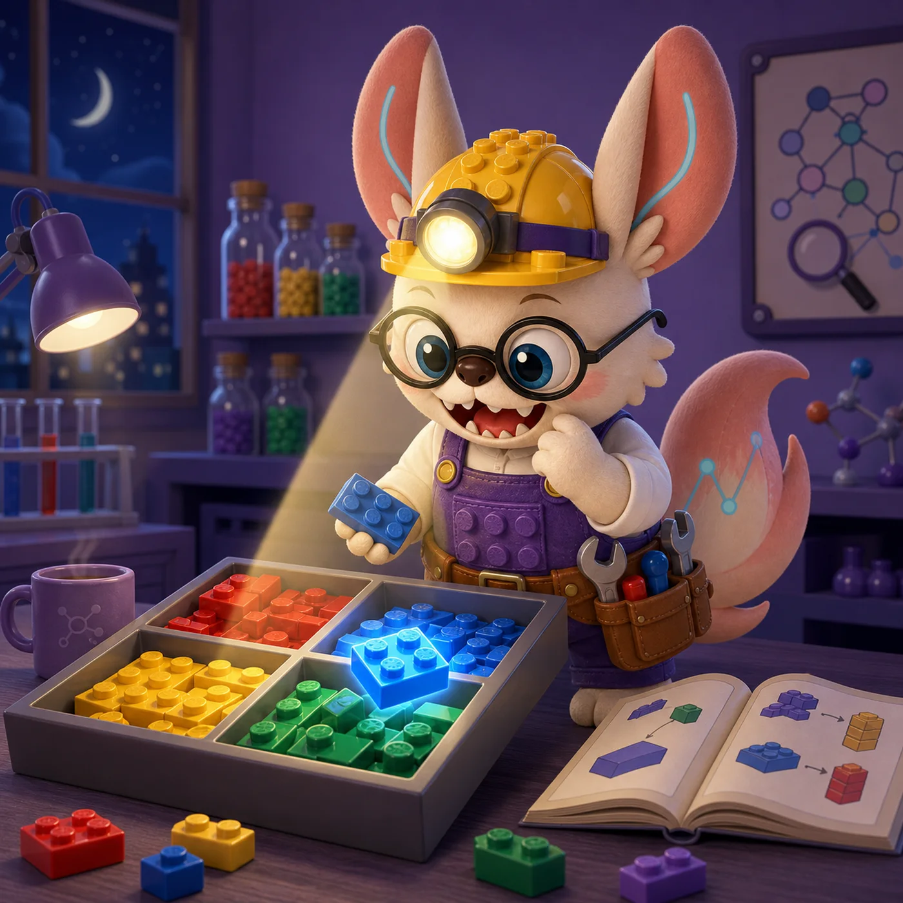
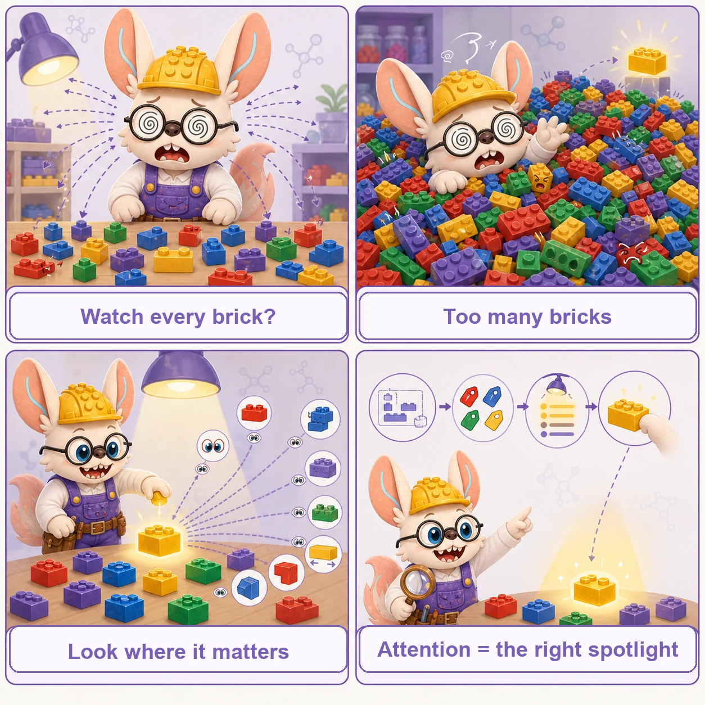

Attention Mechanisms
Understanding How AI Models Focus on What Matters in Biology
Attention mechanisms have revolutionized how AI models process biological data by enabling them to selectively focus on the most relevant parts of their input. Just as biologists scan sequences for important motifs or examine microscopy images for key features, attention allows neural networks to learn which genes, nucleotides, or proteins are most important for a given task—without being explicitly programmed with that knowledge.

Look Where It Matters.
「满盘皆砖，先看哪块。」
Attention is the builder's spotlight over a full tray: the next step in the instructions (Query) checks every brick's label (Key), lights up the best matches, and reaches for what glows (Value). Six scenes from the workbench, re-read as attention mechanics.
The plan checks the labels first
What shape does the next step in the booklet need? You scan the tray for its part number — only when the label matches does your hand reach out.
Query meets Key. The instruction (Q) is matched against every brick's label (K); the match score decides the reach. See why it matters ↓
Every brick eyes its neighbors
In a tray of loose bricks, each one turns to look at the neighbors that share its color — no foreman, just bricks sizing each other up.
Self-attention. Every token attends to every other token in the same sequence. See the group chat of bricks ↓
Eight pairs of eyes
One pair watches color, one watches length, one watches studs, one watches the connectors — eight pairs of eyes each track one feature, and together they choose the piece.
Multi-head attention. Parallel heads, each watching a different feature subspace. See the specialists ↓
Building from someone else's booklet
One hand pins down someone else's instruction sheet, the other builds on your own baseplate — your eyes flick back and forth between the two plans.
Cross-attention. The decoder's queries attend to the encoder's bricks. See cross-attention ↓
Just the circle within reach
When the tray is too big to scan, you look only at the small circle around your hand — neighbors first; neighbors of neighbors later.
Graph & sparse attention. Attend to the local neighborhood first — that is how models scale to millions of cells. See graph attention ↓
Grab by glow
The spotlight finishes its sweep, and the brightest pieces simply fall into your palm — the glow is the share each piece earns.
Softmax → weighted sum. Scores become weights; the output is the weighted sum of Values. See the mechanics ↓

好工匠不是看得多，是看得准 —— attention is not seeing more, but seeing what matters.
Why Attention Mechanisms Matter in Biology
Traditional neural networks process all inputs equally, treating every gene or nucleotide with the same importance. But biological systems are inherently selective—regulatory elements can affect genes millions of base pairs away, protein function depends on specific amino acid interactions, and cell identity is determined by a subset of marker genes. Attention mechanisms capture this selectivity.
Long-Range Dependencies
Captures interactions between distant elements, like enhancers regulating genes >1 Mbp away or amino acids far in sequence but close in 3D structure
Biological Relationships
Learns gene-gene interactions, TF-target relationships, and protein-protein interfaces directly from data without explicit supervision
Interpretability
Attention weights reveal which elements the model considers important, providing biological insights beyond predictions
Transfer Learning
Pre-trained attention models transfer knowledge across tasks, cell types, and even species, reducing need for task-specific training
How the Factory Works: Five Types of Attention
1. Self-Attention: The "Group Chat" of Bricks
The Analogy:
Imagine every single brick in the messy pile enters a giant group chat. A gray foundation brick types, "Hey, I'm at the bottom, who goes on top of me?" A window piece replies, "I do!" and a roof slope says, "Not me, I'm way up top." By talking to everyone simultaneously, every brick figures out exactly where it fits relative to all the others.
In Biology: The model looks at a protein sequence, and every single amino acid determines its relationship with every other amino acid in the chain. This helps the AI understand the 3D shape of the protein based on how distant parts interact, which is crucial for understanding how drugs might bind to it.
Bidirectional vs. Causal: Same Q·KT, Different Mask
Self-attention scores every token against every other token — but a mask decides which of those scores are allowed to matter. Set every entry to visible and you get a bidirectional (BERT-style) encoder trained on masked-token prediction. Zero out everything "after" a token and you get a causal (GPT-style) decoder trained to predict the next token, one at a time.
| Mode | Mask | Pre-training objective | Single-cell examples |
|---|---|---|---|
| Bidirectional | All-ones — every gene sees every other gene | Masked gene / expression prediction | Geneformer, scGPT |
| Causal | Upper-triangular → masked entries set to −∞ before softmax | Next-gene prediction along a "cell sentence" | TranscriptFormer |
LEGO analogy: bidirectional is every brick reading the whole conveyor belt at once; causal is a brick that can only see the pieces already behind it — useful when the model must generate a sequence (or a cell's transcriptome) one token at a time rather than just understand a fixed one.
2. Multi-Head Attention: The Team of Specialists
The Analogy:
Building a huge Lego city is too hard for one person. So, you hire a team of specialists to sort the pile simultaneously.
• Specialist A (Red Hat) only looks for color matches.
• Specialist B (Blue Hat) only looks for specific shapes (like 2x4s).
• Specialist C (Yellow Hat) only looks for functional parts (wheels, gears).
They work at the same time, then combine their sorted piles to build faster.
In Biology: Different "heads" in the AI model learn different biological rules at the same time. One head might focus on which genes are turned on together. Another might focus on the physical chemistry between molecules. A third might look at evolutionary patterns across species. The AI combines all these different "views" for a complete picture.
Multi-Head Variants — Same Parallel Idea, Different Trade-offs
All multi-head variants run several attention computations in parallel and concatenate the outputs. The differences are in how K and V are shared across heads — a knob that trades expressivity against memory and speed.
| Variant | K/V sharing | Memory vs MHA | Single-cell / bio models |
|---|---|---|---|
| Standard MHA | Each head has its own Q, K, V | Baseline (1×) | scGPT, Geneformer, GeneCompass, TranscriptFormer |
| Multi-Query (MQA) | All Q-heads share one K and one V | ~H× smaller KV-cache | LLaMA-family; used in large-scale cell LMs for inference speed |
| Grouped-Query (GQA) | Q-heads split into G groups; each group shares one K/V | H/G× smaller KV-cache | LLaMA-3, Mistral-based bio adapters; better quality than MQA |
| Knowledge-Guided Heads | Some heads masked to known gene-regulatory pairs | Same as MHA | GeneCompass — prior knowledge (TF→target) injected as attention bias |
| RoPE / ALiBi positional | Standard MHA + relative-position score bias | Negligible overhead | TranscriptFormer (RoPE on gene-rank positions); STACK |
LEGO analogy: MQA is all eight specialists sharing one master parts-list instead of each keeping their own clipboard — faster to look up, but every specialist reads the same list even when their task differs. GQA is a compromise: specialists in teams of two share one list.
3. Cross-Attention: Following the Instructions
The Analogy:
Imagine you have the brick pile on the floor, but this time you also have the instruction manual open on the table. You read "Step 5: Find the windshield." Your eyes don't randomly scan the pile anymore. They "cross over" from the manual to the pile and immediately narrow down the search, ignoring all the bricks that are aren't clear plastic windshields.
In Biology: This is used when we have two different types of data. For example, the "instruction manual" could be a DNA sequence, and the "pile" could be data about protein structures. The AI uses the DNA instructions to know exactly which parts of the protein structure data to focus on to find connections between the two.
Cross-Attention Variants — How Queries Meet a Foreign Source
Cross-attention always has Q from one modality and K, V from a second modality. The variants differ in how many tokens each side has and whether the attention is symmetric.
| Variant | Q source → K/V source | Complexity | Single-cell / bio models |
|---|---|---|---|
| Encoder–Decoder | Decoder tokens → Encoder hidden states | O(Ndec·Nenc) | scTranslator (RNA → protein expression), BioTranslator |
| Multi-Modal | RNA tokens ⇄ ATAC / protein tokens | O(Nrna·Natac) | MultiVI (scRNA ↔ scATAC), totalVI (CITE-seq RNA ↔ protein) |
| Latent / Perceiver-style | Small latent Q (L tokens) → large input K/V (N tokens), L ≪ N | O(L·N) — sub-quadratic | Perceiver IO; spatial multi-omics models with many input modalities |
| Conditioning | Sequence tokens → condition embedding (text / drug) | O(N·C), C = condition length | GET (chromatin regions → cell-type condition); drug-conditioned scFMs |
LEGO analogy: Encoder–decoder is one builder reading another builder's completed section before adding their own bricks. Latent cross-attention is a tiny team of supervisors (L=64 summary tokens) scanning a warehouse of 100,000 bricks — they distil the whole warehouse into their small set of notes, then hand those notes to the building crew.
4. Graph-Based Attention: The Local Network
The Analogy:
Imagine a giant, pre-built Lego city. Instead of trying to find connections between a brick in the skyscraper and a brick in the subway station miles away, you only look at the bricks that are physically touching or immediately surrounding the piece you're interested in. You focus on the local neighborhood, ignoring the rest of the massive city to save time.
What it is: Attention restricted to specific graph structures (e.g., k-nearest neighbors in 3D space, known biological interactions).
Why it matters: Reduces computational cost from O(N²) to O(E) — E = number of graph edges, which stays sparse (E = kN for fixed average degree k ≪ N) — while maintaining biological relevance—distant in sequence can be close in 3D structure.
Biological Examples:
- Structured Transformer: k=30 nearest neighbors for protein structure-to-sequence design
- Chroma: Random graph networks enabling 60,000-residue protein complexes
- CellPLM: Spatial graph attention for neighboring cells in tissue
Graph Attention Variants — Which Edges Define the Neighborhood?
The key choice is how the graph is constructed — fixed by biology, learned, or randomly sampled — because that determines which pairs ever exchange information at all.
| Variant | Edge definition | Scalability | Single-cell / bio models |
|---|---|---|---|
| k-NN Graph | k nearest neighbors in 3D space or embedding | O(kN), k fixed | Structured Transformer (k=30 for protein backbone); CellPLM (k neighbors in tissue slide) |
| Random Graph | Random sparse connections; expected degree k | O(kN), stochastic | Chroma — 60,000-residue protein complexes via random backbone graphs |
| Biological Knowledge Graph | Edges = known PPI / TF-target / signaling links | O(E), E from DB | GAT on STRING/BioGRID networks; GRN-guided scRNA models |
| Spatial Cell Graph | Edges = physical proximity in tissue (e.g., Delaunay) | O(kN), k ≈ 6–10 | BANKSY (spatial domain), GraphST, spatialdata workflows |
| Hierarchical Graph | Multi-level: atom → residue → domain → complex | O(N log N) per level | RoseTTAFold All-Atom; multi-scale protein structure models |
LEGO analogy: k-NN is "only check the 30 bricks physically touching yours"; random graph is "randomly assign each brick 10 buddies to chat with regardless of location" — still sparse, but breaks spatial bias; knowledge graph is "check only the bricks listed in the official instruction manual as connected to yours."
5. Pair Representation Attention: Two Bricks, One Shared Record
The Analogy:
Standard attention gives every brick its own name tag that gets updated as it looks around. Pair representation attention goes further: every pair of bricks shares a dedicated index card — brick A's card about brick B, brick B's card about brick C, brick A's card about brick C — and every attention layer updates all of these two-brick cards at once. The model isn't just tracking what each piece is; it's tracking exactly how each pair relates: "A and B are 3.8Å apart, and A-to-C has the same relative orientation as B-to-C."
What it is: Instead of maintaining only a 1D representation per token, the model maintains an explicit 2D matrix of pairwise representations — one vector per (token, token) pair — that is updated jointly with the per-token representations across attention layers (AlphaFold2/3's "triangle attention" over the pair representation).
Why it matters: Encodes fine-grained relational structure standard attention only implies indirectly — explicit inter-residue distances, orientations, and consistency constraints (if A-to-B and B-to-C are known, A-to-C is constrained too) — at the cost of an extra O(N²) memory dimension for the pair matrix itself, on top of the usual O(N²) attention cost.
Biological Examples:
- AlphaFold3 (Abramson et al., Nature 2024): joint structure prediction for proteins, nucleic acids, and ligands via pair representation + triangle attention.
- RoseTTAFold All-Atom (2024): extends pair-representation-style attention to arbitrary biomolecular assemblies.
Pair Representation Variants — How the N×N Matrix Gets Updated
All variants maintain an explicit (i, j) relationship matrix on top of the standard per-token representations. They differ in how triangular consistency is enforced and whether the pair matrix feeds back into per-token attention scores.
| Variant | Update rule | Memory cost | Models |
|---|---|---|---|
| Triangle Attention | Pair (i,j) updated via triangle: sum over k of (i,k)·(k,j) | O(N²·d) pairs + O(N²) attn | AlphaFold2 Evoformer, AlphaFold3 Pairformer |
| Triangle Multiplication | Incoming / outgoing edge products enforce triangle inequality | O(N²·d) | AlphaFold2/3 (runs before triangle attention in each block) |
| Axial Attention on Pairs | Attend along rows, then columns of pair matrix separately | O(N²·d), cheaper constant | RoseTTAFold; MSA Transformer (row + column attention) |
| Outer Product Mean | Pair(i,j) ← mean(token_i ⊗ token_j) — implicit, no true pair attn | O(N²·d) build; no pair attn pass | ESMFold — approximates pair representation without full triangle attention |
| Distance-Biased Pair | 3D distance / orientation injected as attention score bias | O(N²) bias addition | RoseTTAFold All-Atom; Uni-Mol (small-molecule conformer) |
LEGO analogy: Triangle multiplication is the rule "if brick A connects to brick B, and brick B connects to brick C, the A–C connector piece must be geometrically consistent" — the pair matrix enforces this explicitly rather than hoping the model learns it. Outer product mean is like estimating the A–C relationship from A's and C's individual name-tags without a dedicated index card — cheaper, but loses fine-grained distance information.
Key Applications in Biology
Single-Cell Genomics
Attention mechanisms enable models to learn which genes define cell types, predict how cells respond to perturbations, and integrate data across batches and technologies.
| Model | Task | Attention Type | Key Achievement |
|---|---|---|---|
| scGPT | Cell annotation, perturbation prediction | Multi-head self-attention | 33M cells, outperforms task-specific models |
| scBERT | Cell type classification | Performer (linear complexity approximation) | Handles whole transcriptome (16,000+ genes) with linear complexity |
| GeneCompass | Cross-species gene regulation | Multi-head with knowledge embedding | 101.7M cells (53.5M human + 48.2M mouse) with cross-species transfer learning |
| CellPLM | Spatial transcriptomics | Spatial graph attention | Cell-level tokens capture spatial context |
| State (Adduri et al., Arc Institute, bioRxiv 2025) | Perturbation response prediction across cellular contexts | Multi-head self-attention, two-module design: State Embedding (SE) + State Transition (ST) | SE trained on 167M cells, ST on 100M+ perturbed cells; >30% improvement in discriminating perturbation effects; identifies strong perturbations in cellular contexts unseen during training |
| Sigmoid Attention for scFMs (2026) | Single-cell foundation model pre-training | Sigmoid replaces softmax in attention scoring | 25% higher cell-type separation, up to 10% faster training, and more stable training (bounded derivatives avoid the divergence softmax shows on long sequences without gradient clipping) |
| SAVE (Fudan Univ., ICLR 2026) | Multi-condition single-cell generation | Gene Block Attention — genes grouped into pathway-based blocks rather than treated as independent tokens | Generalizes across biological/technical conditions by modeling higher-order dependencies among gene modules |
Genomic Sequence Analysis
Attention allows models to capture long-range regulatory interactions and learn sequence patterns across entire genomes.
| Model | Task | Context Length | Key Innovation |
|---|---|---|---|
| Nucleotide Transformer | Variant effect prediction | 12kb (2,000 6-mers) | Multi-species training (850 genomes) |
| GET | Expression from chromatin | 200 genomic regions (~2-4 Mbp span) | Predicts expression from distal enhancers >1 Mbp away (r=0.94, R²=0.88) |
| AlphaGenome | Regulatory element discovery | ~1 Mb window (1,048,576 bp, single-base resolution) | Multi-scale attention for different genomic features |
| HyenaDNA (Nguyen et al., NeurIPS 2023) | Genomic function prediction | Up to 1M nucleotides, single-nucleotide resolution | Hyena state-space operator (not attention) — no k-mer tokenization, full global context per layer at O(N) cost; SOTA on 12/18 Nucleotide Transformer benchmarks with far fewer parameters |
| Evo 2 (Brixi et al., Arc Institute, 2025) | Sequence generation + variant effect | Up to 1M tokens, single-nucleotide resolution | StripedHyena 2 (SSM); trained on 9.3T nucleotides across 128,000+ species; zero-shot variant-effect prediction |
Protein Design and Structure
Attention mechanisms learn which amino acids interact in 3D space and generate functional proteins with specific properties.
| Model | Application | Attention Approach | Experimental Validation |
|---|---|---|---|
| Structured Transformer | Inverse folding | k-NN graph attention (k=30) | 27.6% native sequence recovery; 21,000× faster on GPU, 455× on CPU vs Rosetta |
| ProGen (Madani et al., Nat Biotechnol 2023) | Protein generation | Causal self-attention (1.2B params) | Functional lysozymes down to 31.4% identity (extreme low-identity case, ~200× lower efficiency). Not to be confused with the later-scaled ProGen2 (Nijkamp et al., Cell Systems 2023; 151M–6.4B params) — a different paper, different param range. |
| Chroma | Complex design | Random graph networks (O(N) edges) | High expression rates; crystal structures ~1Å RMSD to predictions |
| ProteinMPNN | Sequence design | Message passing with attention | State-of-the-art at publication (Dauparas et al., Science 2022) for fixed backbone design |
| LigandMPNN (Dauparas et al., preprint 2023 / Nat Methods 2026) | Sequence design for ligand/nucleotide/metal-binding contexts | Message passing extended with explicit nonprotein-atom context | ProteinMPNN successor: outperforms it on native sequence recovery at small-molecule (63.3% vs 50.5%), nucleotide (50.5% vs 34.0%), and metal (77.5% vs 40.6%) interfaces; 100+ experimentally validated binders, 4 X-ray-confirmed structures |
| AlphaFold3 (Abramson et al., Nature 2024) | Protein–nucleic acid–ligand complex structure prediction | Pair representation + triangle attention (PairFormer) | DOI 10.1038/s41586-024-07487-w; extends structure prediction beyond proteins alone to DNA/RNA/ligand complexes |
Transformer Architectures in Biology
Most attention-based models in biology use the Transformer architecture, introduced by Vaswani et al. (2017). The core innovation is replacing recurrence with attention, allowing parallel processing of sequences while maintaining the ability to capture long-range dependencies.
How Transformers Work for Biological Sequences
1. Tokenization:
- Genes: Each gene becomes a token (scGPT, GeneCompass)
- DNA: 6-mers (Nucleotide Transformer) or single nucleotides (HyenaDNA, Evo)
- Proteins: Individual amino acids or structural elements
- Chromatin: Genomic regions with motif features (GET)
2. Embedding:
- Convert tokens to high-dimensional vectors (typically 256-768 dimensions)
- Add positional information so model knows order in sequence
- Can incorporate biological knowledge (gene families, TF binding motifs)
3. Attention Layers:
- Each token attends to all other tokens (or k-nearest for efficiency)
- Multiple attention heads capture different relationship types
- Stacked layers build hierarchical representations
4. Output:
- Cell-level predictions (scGPT: cell type, perturbation response)
- Gene-level predictions (GET: expression level from chromatin)
- Sequence generation (ProGen: novel functional proteins)
Comparing Attention to Traditional Architectures
| Feature | CNN | RNN/LSTM | Transformer (Attention) | SSM (Mamba/Hyena) |
|---|---|---|---|---|
| Long-range dependencies | Limited by receptive field | Degrades with distance (vanishing gradients) | Direct connections between any positions | Good, but compressed into a fixed-size hidden state (not exact all-pairs) |
| Computational complexity | O(N) | O(N) but sequential | O(N²) for self-attention, O(E) for graph attention (E = edges, sparse when avg. degree ≪ N) | O(N) time and memory |
| Parallelization | High | Low (sequential processing) | Very high (all positions processed together) | High during training (parallel scan); sequential-style recurrence at inference |
| Interpretability | Filter visualization | Hidden states (opaque) | Attention weights show relationships | State transitions (more opaque than attention weights) |
| Variable-length sequences | Requires padding | Natural support | Natural support | Natural support |
| Best biological applications | Local motifs, images | Short sequences, time-series | Long sequences, relationships, foundation models | Ultra-long sequences — whole chromosomes, 1M+ bp genomic context |
Recent Innovations in Attention for Biology
Efficient Attention
Performer (scBERT), FlashAttention (scGPT), and sparse attention patterns reduce O(N²) complexity while maintaining effectiveness for long biological sequences
Knowledge Integration
GeneCompass embeds gene regulatory networks, promoter data, and co-expression into attention, improving performance by 15% over sequence-only models
Cross-Species Learning
Nucleotide Transformer trained on 850 genomes; GeneCompass learns from 101.7M cells (53.5M human + 48.2M mouse) showing cross-species scaling benefits
Structural Attention
Structured Transformer and Chroma use 3D spatial neighborhoods instead of sequence position, capturing physical protein interactions
State Space Models: When O(N) Matters More Than Global Context
Mamba (Gu & Dao, 2024), Hyena (2023), and S4-family models replace attention entirely for very long sequences: O(N) time and memory, no N×N matrix. Power scHyena (single-cell), HyenaDNA (genomic, single-nucleotide), and Evo (single-nucleotide, 1M+ token context). Trade-off: no exact all-pairs global attention in one step — context is compressed into a fixed-size running state. Rule of thumb: reach for attention when global all-pairs dependencies matter; reach for an SSM when the sequence is too long for O(N²) and mostly-local dependency suffices.
Practical Benefits for Biologists
For Experimentalists
- In Silico Screening: scGPT predicts perturbation outcomes (r=0.94) before running CRISPR experiments, saving time and resources
- Variant Interpretation: Nucleotide Transformer scores clinical variants without functional assays
- Protein Design: ProGen and Chroma generate functional proteins in days vs. years of directed evolution
- Cell Type Discovery: Automated annotation with scGPT and scBERT reduces manual curation effort
For Computational Biologists
- Pre-trained Embeddings: Use gene/cell representations from foundation models as features (GeneCompass improved GEARS by 15%)
- Zero-shot Prediction: Apply models to new cell types/species without retraining
- Interpretable Models: Attention weights provide biological insights beyond predictions
- Transfer Learning: Fine-tune on small datasets leveraging knowledge from millions of cells/sequences
Computational Efficiency
| Model | Task | Speed / Scale | Hardware |
|---|---|---|---|
| scGPT | Cell annotation | Pretraining scale: millions of cells (not an inference-speed figure, unlike the rows below) | 8× A100 GPUs |
| Nucleotide Transformer | Variant scoring | 1,000+ sequences/second | Single GPU |
| Structured Transformer | Protein inverse folding | GPU: 222 AA/s (21,000× faster); CPU: 0.488 AA/s (455× faster than Rosetta) | Single GPU or CPU |
| GET | Expression prediction | Minutes per cell type | 8× A100 GPUs |
⚖️ Side-by-Side: Who Attends to Whom — Global Self-Attention vs Graph-Based Attention
Two of the four attention types above sit at opposite ends of one axis: how many other tokens each token is allowed to look at. Global self-attention lets every token attend to every other token; graph-based attention restricts each token to its neighbors in a biological graph — a protein–protein network, a spatial neighborhood, a gene-regulatory graph.
The same set of tokens produces two very different attention patterns depending on who is allowed to attend to whom:
The root decision is attend to everything vs attend along a known biological graph. Global attention is flexible and can learn any dependency, but it is quadratic and structure-agnostic; graph attention is sparse, scales to large systems, and bakes in prior structure — but is capped by the quality of the graph. Multi-head and cross-attention (the other two types above) are orthogonal choices layered on top of either; the global-vs-graph axis is what sets both the compute cost and the inductive bias.
🛠️ Hands-On Practice
The steps below implement the engine inside every one of the four types above — scaled dot-product attention — from scratch in NumPy, then show the PyTorch multi-head and graph-attention equivalents. Seeing the raw matrix math makes the "who attends to whom" idea concrete.
Environment & packages
numpy is enough for the core mechanism; torch provides the production multi-head module, and torch-geometric the graph-restricted variant.
conda create -n attn python=3.10 -y
conda activate attn
pip install numpy torch
# graph-restricted attention variant:
# pip install torch-geometricHardware. The toy example runs anywhere; training a real transformer wants a GPU, and long inputs (whole genomes, thousands of cells) need FlashAttention or an efficient-attention variant to fit the N×N matrix in memory.
Data structures & formats
- Input
X— shape(n_tokens, d_model); tokens are genes, cells, nucleotides, or residues depending on the model Q,K,V— query / key / value projections ofX, each(n_tokens, d_k)- Attention weights —
(n_tokens, n_tokens); each row is a softmax over all keys and sums to 1 - Mask — boolean
(n_tokens, n_tokens)that blocks padding or future positions before the softmax - Heads —
d_modelsplit intonum_headsindependent subspaces, concatenated after attention edge_index(graph attention) —(2, n_edges)list of connected token pairs
Minimal code walkthrough
Scaled dot-product attention in NumPy, then the PyTorch multi-head and graph equivalents.
import numpy as np
def softmax(x, axis=-1):
x = x - x.max(axis=axis, keepdims=True) # subtract max: numerical stability
e = np.exp(x)
return e / e.sum(axis=axis, keepdims=True)
def attention(Q, K, V, mask=None):
d_k = Q.shape[-1]
scores = Q @ K.transpose(-1, -2) / np.sqrt(d_k) # 1/sqrt(d_k) scaling MATTERS
if mask is not None:
scores = np.where(mask, scores, -1e9) # block disallowed pairs BEFORE softmax
weights = softmax(scores, axis=-1) # each row sums to 1
return weights @ V, weights
# toy: 4 tokens (genes / cells / residues), model dim 8
rng = np.random.default_rng(0)
X = rng.standard_normal((4, 8))
Wq, Wk, Wv = (rng.standard_normal((8, 8)) for _ in range(3))
out, attn = attention(X @ Wq, X @ Wk, X @ Wv)
print("attention weights (rows sum to 1):\n", attn.round(2))
print("output shape:", out.shape) # (4, 8)In practice you use the batched, multi-head module — and swap in graph attention when you have a biological graph:
import torch, torch.nn as nn
# Global multi-head self-attention (query = key = value = x)
mha = nn.MultiheadAttention(embed_dim=8, num_heads=2, batch_first=True)
x = torch.randn(1, 4, 8) # (batch, tokens, dim)
out, w = mha(x, x, x) # w: per-head attention weights
# Graph-restricted attention: attend ONLY along edges, not all-pairs
# from torch_geometric.nn import GATConv
# gat = GATConv(in_channels=8, out_channels=8, heads=2)
# out = gat(node_features, edge_index) # edge_index = (2, n_edges)Common pitfalls & tips
- Never drop the 1/√dk scaling. Without it, dot products grow with dimension, push softmax into saturation, and gradients vanish — always divide scores by √dk.
- Stabilize the softmax. Subtract the per-row max before
exp(), or large scores overflow toinf. - Mask before, not after, softmax. Set disallowed scores to a large negative value before softmax; masking afterward leaves leaked probability mass on padding or future tokens.
- Watch the O(N²) memory. The N×N matrix blows up for long inputs (whole genomes, thousands of cells) — use FlashAttention or a linear/efficient-attention variant.
num_headsmust divided_model. Each head getsd_model / num_headsdimensions; a mismatch errors or silently mis-shapes the tensors.- Graph attention is only as good as its edges.
GATConvattends solely alongedge_index; a wrong or too-sparse graph silently starves the model of context.
Scaling up: FlashAttention
The pitfall above (O(N²) memory) is what FlashAttention solves in practice — same exact attention output, computed via tiling so the full N×N matrix is never materialized in memory:
# pip install flash-attn (requires a CUDA-capable GPU)
from flash_attn import flash_attn_qkvpacked_func
# qkv: (batch, seqlen, 3, num_heads, head_dim) — same math as nn.MultiheadAttention,
# but tiled so the N x N score matrix is never fully materialized in memory.
# out = flash_attn_qkvpacked_func(qkv, dropout_p=0.0, causal=False)
#
# Exact (not approximate) attention, typically ~3-7x faster and using an order
# of magnitude less memory than the naive O(N^2) implementation above — the
# difference between truncating to top-K genes and attending over the full
# ~20K-gene transcriptome in one pass.Key Takeaways
What Attention Is
A mechanism that allows models to selectively focus on relevant parts of input, learning which genes, nucleotides, or proteins matter most for a given task
Why It Matters
Captures long-range biological interactions, learns from massive unlabeled data, transfers knowledge across tasks and species, and provides interpretable insights
Real Examples
scGPT (perturbation-response Pearson r=0.94), ProGen (functional down to 31.4% identity), GET (distal-enhancer expression prediction Pearson r=0.94, R²=0.88) — two unrelated models, two different prediction tasks, coincidentally the same correlation value — GeneCompass (101.7M cells cross-species)
How to Use Them
Download pre-trained models, fine-tune on your data, extract embeddings for downstream analysis, and interpret attention weights for biological insights
Getting Started with Attention Models
Step 1: Choose a Pre-trained Model
- Single-cell analysis: scGPT, GeneCompass, scBERT
- Genomic sequences: Nucleotide Transformer, GET
- Protein design: ProGen, Chroma, ProteinMPNN
Step 2: Download and Fine-tune
- Most models available on GitHub/HuggingFace
- Fine-tuning typically requires 1-8 GPUs and hours to days
- Parameter-efficient methods (LoRA, IA3) enable fine-tuning in minutes
Step 3: Extract Insights
- Use embeddings as features for downstream tasks
- Visualize attention weights to understand model focus
- Compare predictions to experiments to validate biological relevance
Continue Learning
Explore more machine learning concepts and their applications in computational biology
Back to Learning Hub